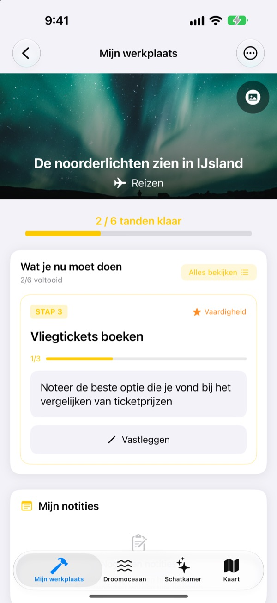
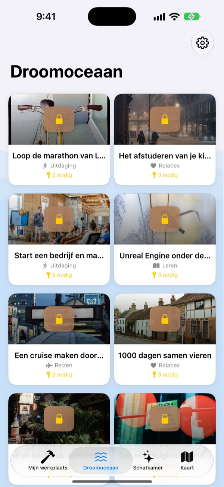
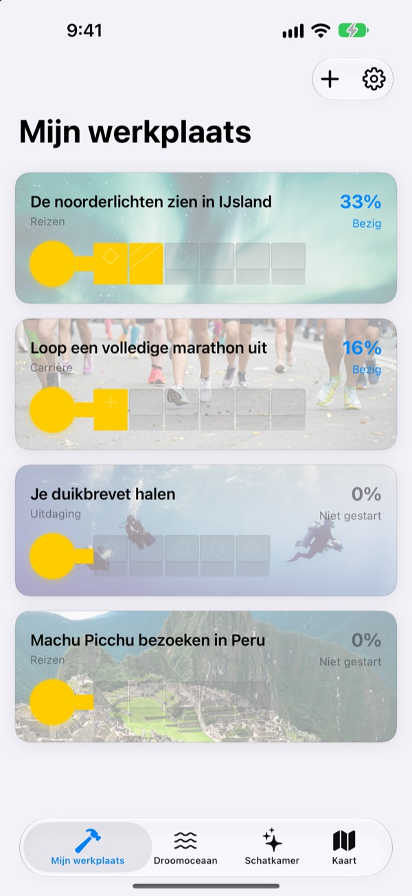
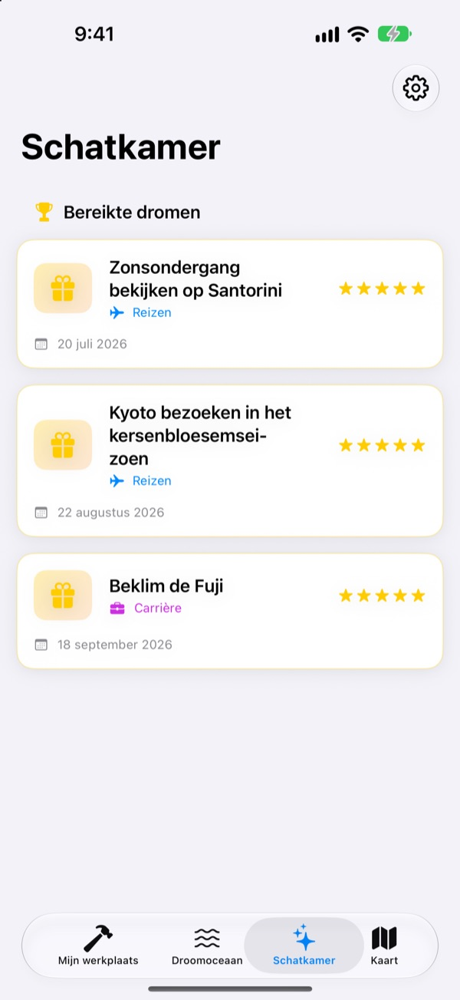

Schrijf je bucketlist
niet alleen op
Kies een droom en de kleine stappen ernaartoe worden de tanden van een sleutel. Beantwoord de stap van vandaag, vraag voor vraag, en voor je het weet is de kist open.
Eén keer kopen en alle functies zijn van jou. Geen abonnement, geen advertenties.

Maak de sleutel af
Bij de droom van het noorderlicht zijn nog twee stappen over. Beantwoord elke vraag in één regel (of laat hem leeg) en tik op ‘Volgende’. Elke afgeronde stap vult een tand, en met een volle sleutel gaat de kist open.
Ooit een bucketlist gemaakt en die vergeten?
‘Het noorderlicht zien’ is zo groot dat je niet weet waar je moet beginnen, dus blijft het jaren op de lijst staan. Dream Seeker deelt de droom op in stappen die je vandaag kunt zetten, zoals het seizoen uitzoeken, sparen en vluchten boeken, en laat alleen de stap zien die nu aan de beurt is.
Kies uit meer dan 590 dromen
Reizen, ervaringen, prestaties, gezondheid, leren en relaties. Dromen uit zes gebieden drijven in kisten over de Droomoceaan. Haal er een naar je werkplaats en de stappen liggen al klaar.
Staat jouw droom er niet bij? Maak hem zelf, met een titel, een gebied en de stappen die nodig zijn.

Eén tand tegelijk, net genoeg voor vandaag
In Mijn werkplaats zie je hoe ver de sleutel van elke droom is. De stap van nu staat bovenaan, en als je de vragen ervan beantwoordt, vult zich een tand.
Je antwoorden en foto’s komen in Mijn notities, en in de Tijdlijn van je voortgang kijk je de hele weg terug.

Uitgekomen dromen naar de Schatkamer, plekken op de kaart
Vul alle tanden en open de kist. Uitgekomen dromen verzamelen zich met datum in de Schatkamer, en gepauzeerde dromen wachten daar tot je verdergaat.
Dromen met een plek verschijnen op de kaart, zodat je alle plekken ziet waar je heen wilt.

In drie stappen beginnen
- 1
Kies een droom
Tik op een kist in de Droomoceaan en kies ‘Naar mijn werkplaats halen’.
- 2
Beantwoord de stap van vandaag
Beantwoord de vragen van de bovenste stap een voor een om een tand te vullen.
- 3
Open de kist
Zijn alle tanden gevuld, dan is de sleutel klaar en gaat de kist open.
Zes gebieden in de Droomoceaan
- Reizen
- De noorderlichten zien in IJsland · Zonsondergang bekijken op Santorini
- Ervaring
- Skydiven · Paragliden
- Prestatie
- Loop een volledige marathon uit · Trek naar het Everest Base Camp
- Gezondheid
- 20 pull-ups doen · Een sixpack krijgen
- Leren
- Vloeiend Engels leren spreken · Vloeiend Frans leren spreken
- Relaties
- Een wereldreis maken met je ouders · Een maand op Jeju wonen met vrienden
Elk gebied heeft bijna honderd dromen. Maak je eigen dromen met ‘Nieuwe droom toevoegen’ in Mijn werkplaats.
Eén keer kopen, alles erin
De app
- Meer dan 590 dromen met vragen bij elke stap
- Je eigen dromen
- Mijn notities met foto’s en de tijdlijn van je voortgang
- Schatkamer en kaart
- Groeimodus
- Toekomstige updates
Steun de ontwikkelaar (optioneel)
- Helpt de app je, dan kun je via Instellingen een kleine fooi geven
- Een fooi ontgrendelt niets. Ook zonder blijven alle functies van jou
Losse fooien, geen abonnement.
In de app kost niets extra. Geen account, geen advertenties.
Veelgestelde vragen
Hoe begin ik?
Tik in het tabblad Droomoceaan op een kist die je aanspreekt en kies ‘Naar mijn werkplaats halen’. Beantwoord in Mijn werkplaats de vragen van de huidige stap, dan vullen de tanden zich een voor een. Zijn ze allemaal vol, dan open je de kist.
Kan ik een eigen droom toevoegen?
Ja. Tik in Mijn werkplaats op ‘Nieuwe droom toevoegen’ en vul een titel, een gebied en de stappen ernaartoe in.
Hoe pauzeer ik een droom of pak ik hem weer op?
Kies in het menu van een lopende droom ‘Deze droom opgeven’. Hij gaat dan naar Gepauzeerde dromen in de Schatkamer. Tik daar op ‘Opnieuw beginnen’ om hem terug te halen naar je werkplaats, of op ‘Definitief verwijderen’ om hem te wissen.
Wat is de groeimodus?
Een weergave waarin je je dromen beheert als het beklimmen van een berg. Zet hem aan of uit via Instellingen > Weergave. Je houdt er deadlines per stap en obstakels zoals kosten en tijd bij, net als bij een project.
Foto’s worden niet getoond.
Sommige achtergrondfoto’s worden van internet geladen. Controleer of je online bent. Zonder verbinding zie je een standaardafbeelding.
Kan ik mijn notities naar een nieuwe iPhone zetten?
Je notities staan alleen op dit apparaat, zonder account of synchronisatie. Zet je een nieuwe iPhone terug vanaf een iCloud- of computerreservekopie, dan gaan ze mee met je andere appgegevens.
Kun je in de app iets kopen?
Nee. Met de app zijn alle functies van jou. De fooien in Instellingen zijn er alleen als je dankjewel wilt zeggen.
Worden mijn dromen en notities ergens heen gestuurd?
Nee. Er is geen account, geen advertenties en geen analysetools. Je dromen, notities en foto’s blijven op je apparaat.
Hoe neem ik contact op?
Bugs, ideeën of iets anders: stuur het via ‘Feedback sturen’ in de instellingen van de app, of via een Instagram-DM (@lee25_ios).
Vragen of problemen? Schrijf naar leeo@kakao.com.